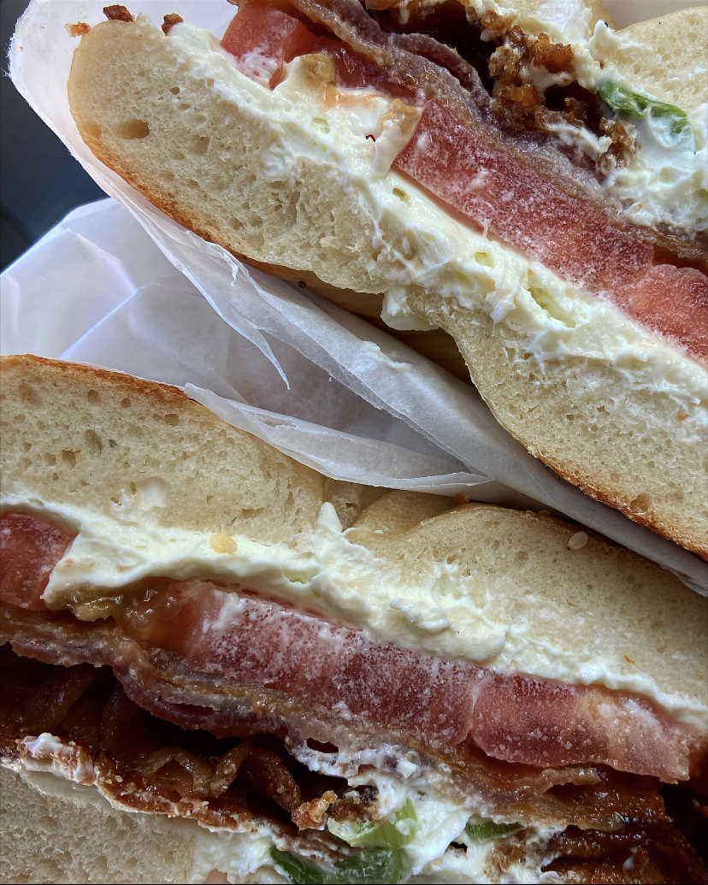

Rainy Days and Baar-Baar Nights
When I first came home from living abroad, in order to fight back against the waves of depression washing over my restless soul, I promised myself that I would spend more time traveling around the U.S. Besides the typical Cape Cod, Maine and Orlando vacations, I hadn’t really seen much of the states. When I was living abroad, however, weekend trips, overnight trips, day trips and just-a-few-random-days-in-another-country trips were regular occurrences (which is probably why I came home with no savings and a sudden onset of claustrophobia).
Cue the lockdown.
Besides a few bonus trips to my grandparents’ house in Chatham, all I had seen of the U.S. since I’d gotten home was the walking trail near my house–over and over again.
Cue online dating.
With the restrictions loosening, online dating gave me the opportunity to see a few new restaurants on Mass Ave and fulfilled my need for adventure in a different sort of way.
Cue meeting my boyfriend.
The weather was getting nicer, vaccinations were rolling out and my boyfriend and I were ready to go places and see things we hadn’t before–and since he’s not from the U.S., that was easy for him.
Cue Cape Cod and Maine.
Off we went to my favorite New England destinations (still working on Orlando because apparently he’s “not a Disney guy”). And, while these were not the destinations I had dreamed of when I first came home, showing him my favorite spots and watching him try so many new things made it just as much of an adventure as going somewhere new. But now that all those boxes have been checked and things have been tried, it’s getting harder for us to figure out exactly where we want to go and what we want to do when we get there.

So, when I had an unexpected day off from work, we both decided New York might be a fun destination to add to our bucket list. While both of us had been, we had never been together and since our favorite hobby is cafe hopping, it seemed like the perfect quick-trip destination.
So, four hours of driving later, we were walking into our first stop on the list of cafes and eateries that we had made on the way there and I had already spent twenty minutes looking for the perfect filter to showcase my plain bagel with scallion cream cheese and one slice of tomato with the hopes of making all 250 (ha!) of my instagram followers jealous of my idyllic New York-date day. However, New York had other plans.
By the time our bagels were finished, it was pouring. Thankfully, my boyfriend, HATES rain and this lent itself perfectly to my coffee-shop-day plans. Unfortunately, we realized that all of the coffee-shop stops we had planned were not in pouring-rain-walking distance. After driving around for what felt like hours, hoping for parking places close to coffee shops, we gave up and parked in the first place we found and made our coffee choices from there.
Still cute coffee shops. Still good coffee. Still kind of annoyed that things weren’t going as planned.
As the rain subsided, so did my desire to be in New York.
Thankfully, not willing to drive home so soon after getting there, my boyfriend convinced me to stay until our dinner plans that night.
So, we passed time by walking ALL around Hudson Yards–and I mean ALL. When it was finally time for us to head to dinner, my legs were tired, my feet were tired, and my voice was tired from complaining about my legs and my feet. My expectations had been so high for this trip that all of the interruptions and changes of plan had made me lose my cool and my joy. With a quick pep talk and a brisk twenty minute walk to secure our reservations, we finally made it to our dinner.
Cue joy.
As my boyfriend is from India (and thus, not from the States), I have found myself eating Indian food more and more frequently. At first it started with specific cravings that he had or places that he wanted me to try and now it has grown into my cravings (almost always for dosa) and well-since-we-are-driving-by-anyway feelings. Also, because the places we go to are our go-to places, the food is always good; however, the Indian bistro we went to that evening in New York was the most delectable, satisfying, luscious over-all restaurant experience that I’ve ever had. Maybe my memories of this restaurant are a little extra rosy because I was dry and sitting down after a day of walking and rain, or maybe it was the fun cocktails and cozy company, either way I stand by every single warm and delicious memory I hold of Baar Baar the Indian Bistro in the East Village.
We ordered the chickpea curry, biryani (a personal fave), boondi raita (yogurt with fried gram flour balls, spices and herbs), naan and mint-cilantro chutney. Everything. Was. Delicious. The food came out steamy, slightly spicy and so delectable. The worst part of the whole night was being too full to finish it all–especially the mint-cilantro chutney. I dream about that chutney. Just the thought of it makes my mouth start watering and my mind start working on ways to get back to that dimly lit high top, so that I can eat it by the spoonful. Between the chutney and the bubble margaritas, the pain in my legs faded, the rain from the morning became blue skies and the too-high-expectations that I had set before the trip were more than realized..
Granted, it probably shouldn’t have taken me half a briyani to realize I needed to adjust my attitude about the day but, alas. Thankfully, by the time I had finished the other half of the briyani, I realized just how idyllic the whole rainy, sore-legged, long-drive little excursion had been. It may not have been the trip that I’d dreamed of when I’d first gotten home but that’s probably because nothing has gone the way that I had expected it would when I came back and I’m starting to see that life changes, and vacations and day-dates end up being so much better that way.